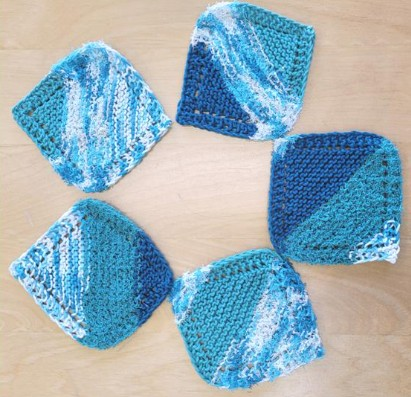
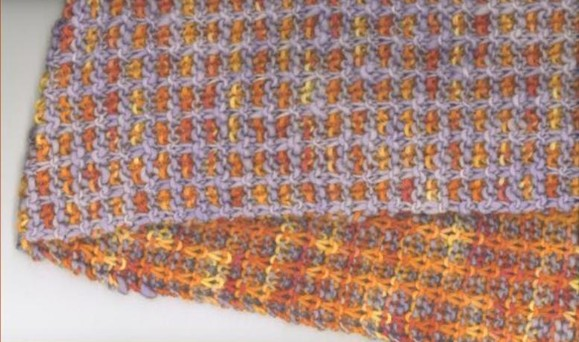
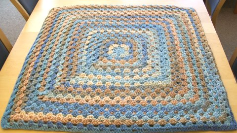
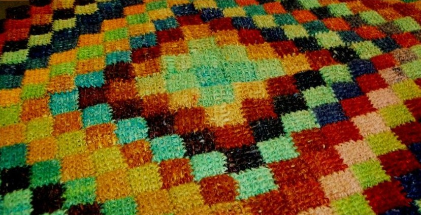

All Points Yarn has lots of products. Need knitting machines, patterns, or yarn? We have them here! Come to our store to buy whatever interests you...
| Type | Information |
|---|---|
| SK 830 Electronic Fine Gauge | The SK830 is the finest gauge machine sold. This 3.6 mm gauge gives you light-weight fabrics for light summer cottons and blends or wool suiting material. (The hand knitting equivalent would be about 9-11+ stitches per inch.) The 250-needle needle bed offers the greatest pattern intricacy and the finest patterning detail possible on a knitting machine. |
| SK 840 Electronic Standard Gauge | The SK840 is the standard-gauge knitting machine. This means that it is from this gauge of machine that others stitch sizes are measured. (The hand knitting equivalent is from 6-9 or -10 stitches per inch.) The SK840 is the perfect machine for fingering and sport weight yarns. The majority of machine knitters own at least one standard gauge machine. The 4.5mm needle spacing is easily visible, yarns for this gauge machine are the most available, and the published pattern support is the most extensive. Like its fine-gauge counterpart, the electronics assist you to produce the widest range of individual motifs and garment. |
| SK 860 Electronic Mid Gauge | You can knit for all seasons with the SK 860 by knitting yarns that are too heavy for a standard gauge machine and to light for a chunky machine. Hand knitters will enjoy a 2.5 - 7 stitches per inch capability from this machine. The SK 860 knitting machine can deliver the best of both worlds, your imagination is the only limit. This machine knits fingering, sport and worsted weight yarns with ease. Using every other needle you can also knit light bulky weight yarn. Excellent choice for the beautiful novelty fur yarns. |
| SK 270 Punch card Fine Gauge | The SK270 is one of Silver Reed's finest, with a 30 stitch punch card pattern center that lets you create beautiful tuck, weaving, slip, and fair isle stitch patterns. This fine gauge punch card machine is the perfect machine for Cashmere and light weight dress yarns to create an array of garments year round from elegant wool suits to summer shells. |
| SK 280 Punchcard Standard Gauge | The SK280 is a machine that will proudly stand by your side to help you create some of the most beautiful garments in your wardrobe. With a 24 stitch punch card pattern center you can create beautiful tuck, weaving, slip, and fair isle stitch patterns. This Standard Gauge Punch card machine is the perfect machine for fingering and sport weight yarns. Indulge your creative side, join the growing family of machine knitters. |
| SK 155 Punchcard Bulky Gauge | The SK 155 takes a step in the right direction by providing a 12 stitch punch card machine that will knit those heavy yarns with ease. Bulky gauge machines can knit 2 - 4+ stitches per inch, hand knitting equivalent. This machine handles worsted weight yarns and makes short work of creating beautiful chunky winter wear. Ideal for heavy weight yarns in the bulky range. Stay warm all winter with the afghans you create to match your decor. Its time to start wearing your garments instead of carrying the parts with you for months hoping to someday finish it. |
| SK 160 Intarsia Mid Gauge | The SK160, what a great beginning. This Mid Gauge Manual Knitting machine offers the same bed as the SK 860 with a non patterning Intarsia carriage. The SK 160 allows you to start with a basic machine that you will never out grow because it grows with you. Learn the basic operation of the machine then add the optional Electronic Carriage and software when you are ready, to upgrade this machine to a SK 860. |
| LK 150 Mid-Gauge Hobby Knitter | The LK 150 offers an excellent knitting machine for the beginner and for the quick making of samples for home or hand knit yarn retailer. It is a light weight portable machine that offers a quick and easy way to create stockinette or manually-patterned fabric. This hobby machine gives you the ability to turn imagination into fashion. With its low cost and ease of use there is no reason not to own one. This machine is ideal for Worsted, Sport, DK and 4 Ply weight yarns. |
| Product | Difficulty | Image |
|---|---|---|
| Five 5" x 5" Washing Cloths | EASY |  |
| Reversible Knit Scarf | EASY |  |
| Loopy Granny Crochet Pattern | INTERMEDIATE |  |
| Around the World Crocheted Afghan | INTERMEDIATE |  |
With the many yarns traditionally used for hand knitting and crochet, we carry a variety of coned yarns for machine knitting, including skeins, hanks and balls easily wound into cakes for machine knitting. Also, if you enjoy felting, you'll love some of the advantages that machine knitting creates, including making your own patterned felted yardage. That's something the felt producers like Noro and Brown Sheep aren't doing. Hand knitters working on larger projects or who enjoy the convenience of not having to search for the next ball of yarn will love knitting from cone, the increased "flow" to their work, and the ease of storage of coned yarns.
In addition to the yarns available here, we also carry coned Lily Yarns (Sugar 'n' Cream), Lion Yarns (e.g., LB1878), Brown Sheep yarns, (Lamb's Pride Worsted, Cotton Fleece). Depending the on the gauge of your needle, hook, or machine, you're sure to find a yarn from among all our offerings to suit your project.